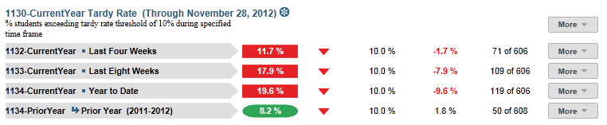
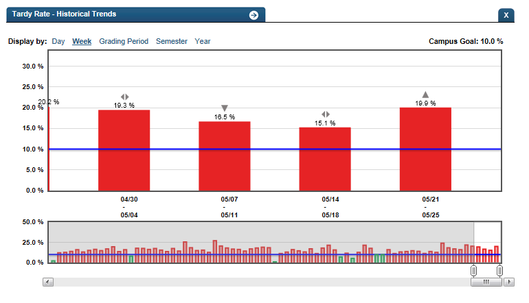

Dashboard Metrics


Tardy Rate
Background
Campus Dashboard Metrics
Especially in the lower grades where attendance is taken only once a day, tardy rate is a key indicator of student success, much along the lines of class period attendance for high school and middle school. Moreover, in stakeholder meetings with educators, tardy rate was repeatedly called out as a need for elementary students.
Primary Metric
- Tardy Rate: the percentage of students tardy during the past four weeks, past eight weeks and year to date with comparison to the campus goal for each time frame.
Related Metric
- Daily Attendance Rate: the percentage of students in attendance during the past four weeks, past eight weeks and year to date, with comparison to the campus goal for each time frame.
User Interface
Dashboard Example
Figure 1 shows the Tardy Rate metric as seen on the campus dashboard.

Figure 1 Ed-Fi Campus Tardy Rate Metric
Status Definition
The Status indicator is determined by campus-specific thresholds (campus goals) which are set at the district level. The default tardy thresholds set in the Ed-Fi dashboards are as follows:
- Current and Previous time frames – 10% (2 days in 4 weeks, 4 days in 8 weeks)
- Year to Date – 10% (number of days eligible * 10% for YTD)
Metric Indicator | Trend Comparisons | |||
Metric Name | Sub-metric Name | Metric Status Indicator | Compares: | To: |
Tardy Rate | Last Four Weeks | Red (Percentage) = if Tardy Rate is greater than or equal to campus goal Green (Percentage) = if Tardy Rate is less than campus goal | Last four weeks (20 Instructional days) Begins 40 instructional days into the school year | Prior four weeks |
Last Eight Weeks | Red (Percentage) = if Tardy Rate is greater than or equal to campus goal Green (Percentage) = if Tardy Rate is less campus goal | Last eight weeks (40 instructional days) | Prior eight weeks | |
Year to Date | Red (Percentage) = if Tardy Rate is greater than or equal to campus goal Green (Percentage) = if Tardy Rate is less than campus goal | Current Year | Prior Year | |
Trend Definition
Table 3 lists the trend indicators for the Tardy Rate metric. Trends are not implemented for Phase 2; this table is for documentation purposes only.
Trend Indicators: Objective is to indicate Daily Attendance Tardy Rate | |||
| Up green | If the value for the current time frame is more than 5 percentage points higher than the prior time frame, then display a gray arrow trending upward. | |
| Unchanged | If the value for the current time frame is less than or equal to 5 percentage points higher or less than or equal to 5 percentage points lower, then display two gray arrows pointing outward indicating no direction. | |
| Down red | If the value for the current time frame is more than 5 percentage points lower than the prior time frame, then display a gray arrow trending downward. | |
Periodicity
Since tardy rate is a leading indicator of performance, best practice is to load this data on a frequent basis, at least weekly, though there is still some benefit from looking at it monthly.
Recommended Load Characteristics | |
Calendar | Throughout the school year |
Frequency of data load | Weekly |
Latency | Monthly |
Interchange schema | Interchange-StudentAttendance.xsd |
Tooltips
The standard tool tips for the metric definition, column headers, and help functions display for this metric.
The following are tooltips specific to the Tardy Rate metric:
- 'More' indicates drill down to view ‘Tardy Detail by Time Frame’
 is ‘No change from the prior period’
is ‘No change from the prior period’ is ‘Getting better from the prior period’
is ‘Getting better from the prior period’ is ‘Getting worse from the prior period’
is ‘Getting worse from the prior period’
Business Rules
This is a roll-up of students who exceed the tardy threshold divided by total students currently enrolled for the following time frames:
- Last Four Weeks
- Last Eight Weeks
- Year to Date
The length of each time frame is configurable and is defined by the district.
Data Assumptions
- Campus must record student tardies at the classroom level for a time frame.
- The class or period when a student is counted as tardy is defined.
- District sets the value that drives the campus thresholds.
- Tardy rate data is available for the campus.
Computed Values
Table 5 shows defines how values are calculated for each time frame. The result of the calculation displays in the Status column on the campus dashboard.
Metric Values | ||
Tardy Rate | Last Four Weeks | Days Tardy = (Number of instructional days in last four weeks) – (Total number of student tardies in the last four weeks) |
Percentage = (Days Tardy / Number of instructional days in the last four weeks) * 100 | ||
Last Eight Weeks | Days Tardy = (Number of instructional days in last eight weeks) – (Total number of student tardies in the last eight weeks) | |
Percentage = (Days Tardy / Number of instructional days in the last eight weeks) * 100 | ||
Year to Date | Days Tardy = (Total number of instructional days in year to date) – (Total number of student tardies in year to date) | |
Percentage = (Days Tardy / Total number of instructional days in year to date) * 100 | ||
Calculation Notes
- If a student is not enrolled for some number of days, subtract those days from the “Total Number of Instructional Days” in both the numerator and the denominator.
- A tardy is computed from attendance in a specified class (section), homeroom, or period.
- If the current time frame is the first occurrence of the time frame of the school year, the previous time frame is grayed-out.
Data Anomalies
Anomalies
Metrics are sensitive to when and how often the data is loaded.
Late enrollees are likely to be missing attendance data. This calculation is not dynamic, and currently students will be presumed present for all days prior to enrollment. Detail view of tardy rate will have more options.
If the school calendar changes, then adjust the denominator to reflect eligible days.
Create an icon (not implement) that shows if last data load was more than a month ago.
Best practice is to use footnotes to address these anomalies.
Footnotes
Footnotes are used to provide addition data information concerning the metric. Footnotes are sequential for the entire page. Therefore, a metric's footnote may not begin with the number 1.
The following footnotes appear below the metric:
Best practice is to footnote students transferring in that have not been present for a full time frame.
Metrics are sensitive to when and how often the data is loaded.
Late enrollees are likely to be missing tardy data.
Date of Refresh
Best practice is for the date of last data refresh to appear next the metric in the following format:
(Through April 22, 2010)
Implementation Considerations
Designation of Campus Rule for Tardy Rate
Elementary and Middle schools typically designate a specific class (e.g., homeroom), or a time or class period on which to base tardy rate. This campus-specific business rule needs to be captured in order to properly interpret tardy rate from section attendance data.
Late Enrollments
For late enrollment students, subtract the days the student was not enrolled in a time frame (i.e., last 4 weeks, last eight weeks, or year-to-date).
Classification of Days as Non-Instructional Days
For the computation of the number of instructional days, developers can use either the total count of instructional days in a time frame or utilize the school calendar to identify specific instructional days for the time frame as the denominator for the percentage. The latter is a more accurate approach to calculating the metric with the caveat that it requires frequent uploading of data throughout the school year.
Frequency of Uploading Data
The metric computation implementation may vary depending on the periodicity of loading the data. For example, a daily load requires that you load data only for a single day (i.e., the last instructional day). Less frequent uploads require that you load data for each day since the date of the last load.
Length of Time Frames
The choice of four and eight weeks and year to date in Ed-Fi is based on educator input, but the length of each time frame is configurable at the district level.
Trend
The metric assumes that only the current year’s tardy data is loaded. In this case, if the current time is the
- First time frame, there is no trend for current time frame and no trend for previous time frame.
- Second time frame, there is no trend for the previous time frame.
If the previous year’s tardy data is loaded, you have the option to compare to the previous years' time frames.
Best practice is for the district to establish a precision policy on what determines no change (e.g., ±5 percentage points).
Thresholds
Best practice is to set the thresholds for each campus at the district level. A secure mechanism is required to allow the district to set and maintain those thresholds.
Database Table Scalability
Daily attendance is one of the largest student datasets to maintain. To limit the size of daily attendance, developers may include only the current year’s data.
To aid in planning for dataset management, one benchmark from the Ed-Fi prototype testing is that the daily attendance data for roughly 48,500 students for half of the school year required 8.3 million rows, or approximately 171 rows per student.
Aggregate Metric Inclusions and Exclusions of Special Education Students
Each campus's aggregate metrics may include or exclude the special education population, depending on the intended purpose for a specific metric and campus goal.
Drill Downs
Description
This drill down displays a graph of a student’s tardies by time frames for the current school year.
Drill Down Views
The dashboards include the option to drill down and see more detail that is associated with a metric. Table 6 lists the drill down views that are recommended for this metric.
| Advanced Analysis | Break down of student test assessment (commended, not commended, met standard, and didn't meet standard) (Future Implementation) | |
| Grade Level | Graph of test assessment detail by grade level | |
| Historical | Graph displaying trends across days, weeks, grading periods, semesters, and years |
Business Rules
The Historical Graph allows the user to see historical data across multiple timeframes. As time passes, there are many bars to be displayed; therefore, the slider on the bottom allows the user to adjust the number of bars displayed as well as the time period shown. The timeframes for this metric were chosen based on educator feedback.
User Interface
Figure 2 shows the Tardy Rate drill down as seen on the campus dashboard.

Figure 2 Ed-Fi Historical Tardy Rate